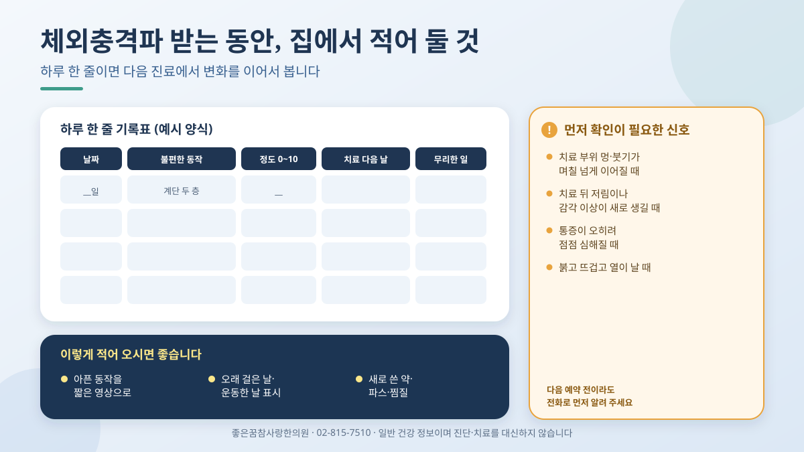

이종호 한의사 감수좋은꿈참사랑한의원 대표원장 (한의사 면허번호 19769)발행 2026-11-23 · 수정 2026-11-25
이 글의 차례
체외충격파를 받는 동안에는 불편한 동작, 아픈 정도, 치료 다음 날의 느낌, 무리한 날을 하루 한 줄로 적어 두시면 좋습니다. 치료 직후의 느낌만으로는 몸이 일상에서 어떻게 지내는지 알기 어렵기 때문입니다. 다음 방문 때 지난 며칠을 떠올리기 쉬워지고, 진료 방향을 정하는 이야기도 훨씬 구체적이 됩니다.
기록이라고 해서 길게 쓸 필요는 없습니다. 매일 같은 동작 하나를 정해 두고 그 동작이 오늘은 어땠는지만 적어도, 몇 번의 방문이 쌓이면 흐름이 보입니다. 지금 받는 체외충격파를 이어 갈지, 세기나 간격을 바꿀지, 다른 방법을 더할지를 정할 때 이 기록이 진찰과 함께 참고 자료가 됩니다.
왜 이런 불편이 생길 수 있나요
- 통증은 날씨, 활동량, 잠에 따라 날마다 달라 하루의 느낌만으로 흐름을 판단하기 어렵습니다.
- 치료 다음 날 그 부위가 잠시 뻐근하다는 분들이 있어, 그 느낌이 얼마나 이어졌는지가 중요한 정보가 됩니다.
- 무리하게 쓴 날의 통증과 평소의 통증을 구분하지 않으면 변화를 잘못 읽을 수 있습니다.
- 진료실에서는 짧은 시간의 모습만 볼 수 있어, 아침에 일어날 때나 퇴근길 같은 일상의 장면은 기록으로만 알 수 있습니다.
- 기억은 시간이 지나면 흐려져, 적어 둔 기록이 실제 모습을 더 정확히 보여 줍니다.

먼저 이렇게 여쭙니다
- 어떤 동작에서 가장 불편하셨나요?
- 아침과 저녁 중 언제 더 아픈가요?
- 치료 다음 날 뻐근함이 있었나요? 얼마나 이어졌나요?
- 그 사이 무리하게 쓴 날이 있었나요?
- 지난 방문 이후 새로 먹은 약이나 파스, 찜질이 있었나요?
스스로 점검해 보세요
- 매번 같은 기준 동작 하나를 정해 두었다
- 아픈 정도를 숫자나 일상 동작으로 같은 방식으로 적고 있다
- 치료 다음 날 뻐근함이 있었는지 따로 적었다
- 오래 걷거나 운동한 날, 일이 많았던 날을 표시했다
- 잠을 설친 날과 날씨가 크게 바뀐 날을 적었다
- 새로 쓴 약이나 파스, 찜질을 적었다
모두 채우지 못해도 괜찮습니다. 첫 번째와 세 번째만 꾸준히 적어도 다음 진료에서 이야기할 거리가 충분히 생깁니다.
일상에서 먼저 해 볼 수 있는 것
- 하루 한 줄로 '불편한 동작, 정도(0~10)'를 적기
- 치료 다음 날의 뻐근함을 따로 적어 두기
- 오래 걷거나 운동한 날을 표시하기
- 휴대폰 메모나 달력에 같은 형식으로 남기기
- 아픈 동작을 짧은 영상으로 찍어 두기
한 줄은 예를 들어 '날짜 / 기준 동작: 계단 내려가기 / 정도: 숫자 또는 계단 반쯤에서 시큰 / 다음 날 뻐근함: 오전까지 / 특이: 오래 걸음'처럼 적으면 충분합니다. 저녁 양치 뒤처럼 매일 하는 습관 하나에 붙여 두면 잊지 않고 이어 가기 쉽습니다. 아프지 않았던 날도 '괜찮음'이라고 적어 두시면 변화의 흐름을 읽는 데 오히려 쓸모가 큽니다.
예를 들면 이런 경우입니다
- 예를 들어 야근이 잦은 직장인이라면, 퇴근길 지하철 계단을 기준 동작으로 정하고 휴대폰 메모에 알림을 맞춰 두면 바쁜 주에도 한 줄을 남기기 쉽습니다.
- 예를 들어 연세 드신 부모님이 체외충격파를 받는 경우라면, 가족이 달력에 치료한 날을 표시하고 다음 날 통화로 어제보다 어땠는지만 여쭤 적어 두어도 충분합니다.
- 예를 들어 아이를 키우며 손목이나 팔꿈치 치료를 받는 분이라면, 아이를 오래 안고 있었던 날을 따로 표시해 두면 통증이 생활의 어떤 장면과 이어지는지 함께 살피기 쉽습니다.
얼마나 지켜보고, 언제 연락할까요
- 치료 다음 날 그 부위가 잠시 뻐근하거나 얼얼하다는 분들이 있습니다. 기록에 적어 두고 며칠 동안 점점 옅어지는지 지켜보세요.
- 뻐근함이 며칠 넘게 이어지거나 오히려 점점 심해진다면 다음 예약을 기다리지 말고 전화로 먼저 알려 주세요.
- 몇 번의 방문 동안 기록에 달라진 점이 거의 없다면, 그 기록을 바탕으로 방법을 바꿀지 진찰 뒤 함께 이야기합니다.
- 이럴 땐 바로 확인하세요. 치료 부위가 붉고 뜨겁게 부으며 열이 나거나, 새로 저림이나 힘 빠짐이 생기면 기다리지 말고 연락해 주시고, 필요하면 영상 검사가 가능한 의료기관을 먼저 찾으세요.
한의원에서 함께 살필 수 있는 경우
- 기록을 보며 같은 동작으로 다시 확인하고 다음 진행을 함께 정합니다.
- 반응이 충분하지 않다고 판단되면 다른 방법을 검토합니다.
- 생활 속에서 무리가 되는 동작이 보이면 함께 조정합니다.
좋은꿈참사랑한의원에서는 방문할 때마다 지난번과 같은 동작으로 다시 확인하고, 적어 오신 기록과 함께 달라진 점을 살핍니다. 그 결과에 따라 체외충격파의 강도나 간격을 조절하거나 침, 약침, 추나 같은 방법을 상태에 맞게 더하거나 바꿉니다. 귀가 전에는 다음 방문까지 지켜볼 동작과 피할 동작을 알려 드립니다.
체외충격파를 처음 시작하는 날에는 기록의 기준이 될 동작을 함께 정합니다. 문진으로 아픈 동작과 생활을 듣고 맥부터 짚어 본 뒤, 아픈 곳을 눌러 보고 움직여 보며 가장 뚜렷하게 불편한 동작 하나를 골라 그날의 정도를 함께 적어 둡니다.
원내 장비(제우스·한일티엠) 가운데 어떤 것을 쓸지, 몇 번과 어떤 간격으로 이어 갈지는 진찰 뒤 함께 정하고, 이후 기록과 반응을 보며 다시 의논합니다. 비용이나 보험 적용은 방문 전 전화로 확인해 주세요.
이렇게 기록해 오시면 상담이 쉬워집니다
- 날짜, 불편한 동작, 아픈 정도(0~10 또는 '계단 두 층에서 아팠다' 같은 말)
- 치료 다음 날 뻐근함이 있었는지와 이어진 시간
- 오래 걷거나 운동한 날, 일을 많이 한 날
- 잠을 설친 날과 날씨가 크게 바뀐 날
- 새로 먹기 시작한 약이나 파스, 찜질 사용
이런 증상은 먼저 확인이 필요합니다
- 치료 부위에 멍이나 붓기가 며칠 넘게 이어지는 경우
- 치료 뒤 저림이나 감각 이상이 새로 생긴 경우
- 통증이 오히려 점점 심해지는 경우
- 치료 부위가 붉고 뜨거우며 열이 나는 경우
이런 변화가 있으면 다음 예약을 기다리지 말고 전화로 먼저 알려 주세요. 체외충격파는 진찰 후 필요하다고 판단될 때만 하며, 대상과 횟수, 비용은 진찰 후 안내해 드립니다. 복용 중인 약은 처방한 의사와 상의 없이 줄이거나 끊지 않습니다.
함께 읽으면 좋은 글
- 체외충격파를 받은 날은 어떻게 지내면 되나요?
- 체외충격파는 아플수록 좋은 치료일까요?
- 연말연시 일정과 체외충격파 진료가 겹칠 때 방문 간격과 쉬는 기간은 어떻게 상의하나요?

여쭙는 것
- 어떤 동작에서 가장 불편하셨나요?
- 아침과 저녁 중 언제 더 아픈가요?
- 치료 다음 날 뻐근함이 있었나요? 얼마나 이어졌나요?
생활에서 해 볼 것
- 하루 한 줄로 '불편한 동작, 정도(0~10)'를 적기
- 치료 다음 날의 뻐근함을 따로 적어 두기
- 오래 걷거나 운동한 날을 표시하기
한의원에서 함께 살필 것
- 기록을 보며 같은 동작으로 다시 확인하고 다음 진행을 함께 정합니다.
- 반응이 충분하지 않다고 판단되면 다른 방법을 검토합니다.
- 생활 속에서 무리가 되는 동작이 보이면 함께 조정합니다.
먼저 확인이 필요한 신호
- 치료 부위에 멍이나 붓기가 며칠 넘게 이어지는 경우
- 치료 뒤 저림이나 감각 이상이 새로 생긴 경우
- 통증이 오히려 점점 심해지는 경우
한눈에 보는 표
| 구분 | 핵심 |
|---|---|
| 여쭙는 것 | 어떤 동작에서 가장 불편하셨나요? 아침과 저녁 중 언제 더 아픈가요? |
| 생활에서 해 볼 것 | 하루 한 줄로 '불편한 동작, 정도(0~10)'를 적기 치료 다음 날의 뻐근함을 따로 적어 두기 |
| 한의원에서 함께 살필 것 | 기록을 보며 같은 동작으로 다시 확인하고 다음 진행을 함께 정합니다. 반응이 충분하지 않다고 판단되면 다른 방법을 검토합니다. |
| 먼저 확인이 필요한 신호 | 치료 부위에 멍이나 붓기가 며칠 넘게 이어지는 경우 치료 뒤 저림이나 감각 이상이 새로 생긴 경우 |
자주 묻는 질문
기록을 꼭 해야 하나요?
꼭은 아니지만, 적어 두시면 다음 진료에서 달라진 점을 더 정확히 이야기할 수 있습니다.
숫자로 아픈 정도를 적기 어려우면요?
'계단 몇 층에서 아팠다'처럼 일상 동작으로 적으셔도 충분합니다.
치료 다음 날 뻐근하면 걱정해야 하나요?
잠시 뻐근하다는 분들이 있습니다. 며칠 넘게 이어지거나 점점 심해지면 다음 예약 전에 먼저 연락해 주세요.
기록을 빼먹은 날이 많으면 어떻게 하나요?
괜찮습니다. 기억나는 만큼만 말씀해 주시고, 다음부터 기준 동작 하나만이라도 적어 보세요.
진료 시간은 어떻게 되나요?
좋은꿈참사랑한의원은 평일 09:30~20:00(점심 13:00~14:00), 토·일·공휴일 09:30~15:00에 진료합니다.
좋은꿈참사랑한의원은 재진 때 지난번 이야기부터 이어서 여쭙니다. 진료시간과 예약은 오시는 길에서 확인하세요.
어디서 상담받을 수 있나요?
좋은꿈참사랑한의원은 서울 동작구 만양로2길 2 신성빌딩 3층·5층(서울 동작구 상도동, 7호선 상도역 3번 출구 근처)에 있습니다. 한의사 3명(이종호 대표원장, 조영기 수석진료원장, 정원영 진료원장)이 진료합니다. 진료시간은 평일 09:30~20:00(점심 13:00~14:00), 토·일·공휴일 09:30~15:00이며, 방문 전 전화로 확인을 권합니다. 예약은 네이버 예약, 카카오톡 상담, 전화 02-815-7510로 받습니다.
이 글은 일반적인 건강 정보이며 개인의 진단이나 치료를 대신하지 않습니다. 증상이 있거나 복용 중인 약이 있다면 진료를 통해 확인하세요. 치료 효과는 개인마다 다를 수 있습니다.
작성 기준: 일반적으로 알려져 있는 건강 정보를 참고해 정리했습니다(대표원장 감수). 증상 기록은 1~2주 동안 하루 1회, 비슷한 시간에 적어 오시면 지난 상태와 비교하기 쉽습니다.